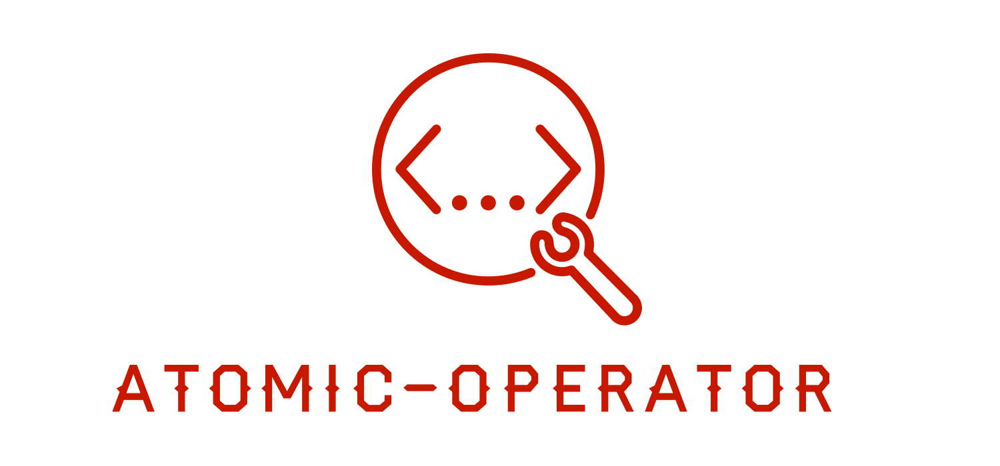

atomic-operator

This python package is used to execute Atomic Red Team tests (Atomics) across multiple operating system environments.
Why?
atomic-operator enables security professionals to test their detection and defensive capabilities against prescribed techniques defined within atomic-red-team. By utilizing a testing framework such as atomic-operator, you can identify both your defensive capabilities as well as gaps in defensive coverage.
Additionally, atomic-operator can be used in many other situations like:
- Generating alerts to test products
- Testing EDR and other security tools
- Identifying way to perform defensive evasion from an adversary perspective
- Plus more.
Features
- Support local and remote execution of Atomic Red Teams tests on Windows, macOS, and Linux systems
- Supports running atomic-tests against
iaas:aws - Can prompt for input arguments but not required
- Assist with downloading the atomic-red-team repository
- Can be automated further based on a configuration file
- A command-line and importable Python package
- Select specific tests when one or more techniques are specified
- Plus more
Getting Started
atomic-operator is a Python-only package hosted on PyPi and works with Python 3.6 and greater.
If you are wanting a PowerShell version, please checkout Invoke-AtomicRedTeam.
pip install atomic-operator
The next steps will guide you through setting up and running atomic-operator.
- Get Atomics Install / clone Atomic Red Team repository
- atomic-operator Understand the options availble in atomic-operator
- Running Test on Command Line or Running Tests within a Script
- Running Tests via Configuration File
Installation
You can install atomic-operator on OS X, Linux, or Windows. You can also install it directly from the source. To install, see the commands under the relevant operating system heading, below.
Prerequisites
The following libraries are required and installed by atomic-operator:
pyyaml==5.4.1
fire==0.4.0
requests==2.26.0
attrs==21.2.0
pick==1.2.0
macOS, Linux and Windows:
pip install atomic-operator
macOS using M1 processor
git clone https://github.com/swimlane/atomic-operator.git
cd atomic-operator
# Satisfy ModuleNotFoundError: No module named 'setuptools_rust'
brew install rust
pip3 install --upgrade pip
pip3 install setuptools_rust
# Back to our regularly scheduled programming . . .
pip install -r requirements.txt
python setup.py install
Installing from source
git clone https://github.com/swimlane/atomic-operator.git
cd atomic-operator
pip install -r requirements.txt
python setup.py install
Usage example (command line)
You can run atomic-operator from the command line or within your own Python scripts. To use atomic-operator at the command line simply enter the following in your terminal:
atomic-operator --help
atomic-operator run -- --help
Please note that to see details about the run command run
atomic-operator run -- --helpand NOTatomic-operator run --help
Retrieving Atomic Tests
In order to use atomic-operator you must have one or more atomic-red-team tests (Atomics) on your local system. atomic-operator provides you with the ability to download the Atomic Red Team repository. You can do so by running the following at the command line:
atomic-operator get_atomics
# You can specify the destination directory by using the --destination flag
atomic-operator get_atomics --destination "/tmp/some_directory"
Running Tests Locally
In order to run a test you must provide some additional properties (and options if desired). The main method to run tests is named run.
# This will run ALL tests compatiable with your local operating system
atomic-operator run --atomics-path "/tmp/some_directory/redcanaryco-atomic-red-team-3700624"
You can select individual tests when you provide one or more specific techniques. For example running the following on the command line:
atomic-operator run --techniques T1564.001 --select_tests
Will prompt the user with a selection list of tests associated with that technique. A user can select one or more tests by using the space bar to highlight the desired test:
Select Test(s) for Technique T1564.001 (Hide Artifacts: Hidden Files and Directories)
* Create a hidden file in a hidden directory (61a782e5-9a19-40b5-8ba4-69a4b9f3d7be)
Mac Hidden file (cddb9098-3b47-4e01-9d3b-6f5f323288a9)
Create Windows System File with Attrib (f70974c8-c094-4574-b542-2c545af95a32)
Create Windows Hidden File with Attrib (dadb792e-4358-4d8d-9207-b771faa0daa5)
Hidden files (3b7015f2-3144-4205-b799-b05580621379)
Hide a Directory (b115ecaf-3b24-4ed2-aefe-2fcb9db913d3)
Show all hidden files (9a1ec7da-b892-449f-ad68-67066d04380c)
Running Tests Remotely
In order to run a test remotely you must provide some additional properties (and options if desired). The main method to run tests is named run.
# This will run ALL tests compatiable with your local operating system
atomic-operator run --atomics-path "/tmp/some_directory/redcanaryco-atomic-red-team-3700624" --hosts "10.32.1.0" --username "my_username" --password "my_password"
When running commands remotely against Windows hosts you may need to configure PSRemoting. See details here: Windows Remoting
Additional parameters
You can see additional parameters by running the following command:
atomic-operator run -- --help
| Parameter Name | Type | Default | Description |
|---|---|---|---|
| techniques | list | all | One or more defined techniques by attack_technique ID. |
| test_guids | list | None | One or more Atomic test GUIDs. |
| select_tests | bool | False | Select one or more atomic tests to run when a techniques are specified. |
| atomics_path | str | os.getcwd() | The path of Atomic tests. |
| check_prereqs | bool | False | Whether or not to check for prereq dependencies (prereq_comand). |
| get_prereqs | bool | False | Whether or not you want to retrieve prerequisites. |
| cleanup | bool | False | Whether or not you want to run cleanup command(s). |
| copy_source_files | bool | True | Whether or not you want to copy any related source (src, bin, etc.) files to a remote host. |
| command_timeout | int | 20 | Time duration for each command before timeout. |
| debug | bool | False | Whether or not you want to output details about tests being ran. |
| prompt_for_input_args | bool | False | Whether you want to prompt for input arguments for each test. |
| return_atomics | bool | False | Whether or not you want to return atomics instead of running them. |
| config_file | str | None | A path to a conifg_file which is used to automate atomic-operator in environments. |
| config_file_only | bool | False | Whether or not you want to run tests based on the provided config_file only. |
| hosts | list | None | A list of one or more remote hosts to run a test on. |
| username | str | None | Username for authentication of remote connections. |
| password | str | None | Password for authentication of remote connections. |
| ssh_key_path | str | None | Path to a SSH Key for authentication of remote connections. |
| private_key_string | str | None | A private SSH Key string used for authentication of remote connections. |
| verify_ssl | bool | False | Whether or not to verify ssl when connecting over RDP (windows). |
| ssh_port | int | 22 | SSH port for authentication of remote connections. |
| ssh_timeout | int | 5 | SSH timeout for authentication of remote connections. |
| **kwargs | dict | None | If additional flags are passed into the run command then we will attempt to match them with defined inputs within Atomic tests and replace their value with the provided value. |
You should see a similar output to the following:
NAME
atomic-operator run - The main method in which we run Atomic Red Team tests.
SYNOPSIS
atomic-operator run <flags>
DESCRIPTION
The main method in which we run Atomic Red Team tests.
FLAGS
--techniques=TECHNIQUES
Type: list
Default: ['all']
One or more defined techniques by attack_technique ID. Defaults to 'all'.
--test_guids=TEST_GUIDS
Type: list
Default: []
One or more Atomic test GUIDs. Defaults to None.
--select_tests=SELECT_TESTS
Type: bool
Default: False
Select one or more tests from provided techniques. Defaults to False.
--atomics_path=ATOMICS_PATH
Default: '/U...
The path of Atomic tests. Defaults to os.getcwd().
--check_prereqs=CHECK_PREREQS
Default: False
Whether or not to check for prereq dependencies (prereq_comand). Defaults to False.
--get_prereqs=GET_PREREQS
Default: False
Whether or not you want to retrieve prerequisites. Defaults to False.
--cleanup=CLEANUP
Default: False
Whether or not you want to run cleanup command(s). Defaults to False.
--copy_source_files=COPY_SOURCE_FILES
Default: True
Whether or not you want to copy any related source (src, bin, etc.) files to a remote host. Defaults to True.
--command_timeout=COMMAND_TIMEOUT
Default: 20
Timeout duration for each command. Defaults to 20.
--debug=DEBUG
Default: False
Whether or not you want to output details about tests being ran. Defaults to False.
--prompt_for_input_args=PROMPT_FOR_INPUT_ARGS
Default: False
Whether you want to prompt for input arguments for each test. Defaults to False.
--return_atomics=RETURN_ATOMICS
Default: False
Whether or not you want to return atomics instead of running them. Defaults to False.
--config_file=CONFIG_FILE
Type: Optional[]
Default: None
A path to a conifg_file which is used to automate atomic-operator in environments. Default to None.
--config_file_only=CONFIG_FILE_ONLY
Default: False
Whether or not you want to run tests based on the provided config_file only. Defaults to False.
--hosts=HOSTS
Default: []
A list of one or more remote hosts to run a test on. Defaults to [].
--username=USERNAME
Type: Optional[]
Default: None
Username for authentication of remote connections. Defaults to None.
--password=PASSWORD
Type: Optional[]
Default: None
Password for authentication of remote connections. Defaults to None.
--ssh_key_path=SSH_KEY_PATH
Type: Optional[]
Default: None
Path to a SSH Key for authentication of remote connections. Defaults to None.
--private_key_string=PRIVATE_KEY_STRING
Type: Optional[]
Default: None
A private SSH Key string used for authentication of remote connections. Defaults to None.
--verify_ssl=VERIFY_SSL
Default: False
Whether or not to verify ssl when connecting over RDP (windows). Defaults to False.
--ssh_port=SSH_PORT
Default: 22
SSH port for authentication of remote connections. Defaults to 22.
--ssh_timeout=SSH_TIMEOUT
Default: 5
SSH timeout for authentication of remote connections. Defaults to 5.
Additional flags are accepted.
If provided, keys matching inputs for a test will be replaced. Default is None.
Running atomic-operator using a config_file
In addition to the ability to pass in parameters with atomic-operator you can also pass in a path to a config_file that contains all the atomic tests and their potential inputs. You can see an example of this config_file here:
atomic_tests:
- guid: f7e6ec05-c19e-4a80-a7e7-241027992fdb
input_arguments:
output_file:
value: custom_output.txt
input_file:
value: custom_input.txt
- guid: 3ff64f0b-3af2-3866-339d-38d9791407c3
input_arguments:
second_arg:
value: SWAPPPED argument
- guid: 32f90516-4bc9-43bd-b18d-2cbe0b7ca9b2
Usage example (scripts)
To use atomic-operator you must instantiate an AtomicOperator object.
from atomic_operator import AtomicOperator
operator = AtomicOperator()
# This will download a local copy of the atomic-red-team repository
print(operator.get_atomics('/tmp/some_directory'))
# this will run tests on your local system
operator.run(
technique: str='All',
atomics_path=os.getcwd(),
check_dependencies=False,
get_prereqs=False,
cleanup=False,
command_timeout=20,
debug=False,
prompt_for_input_args=False,
**kwargs
)
Getting Help
Please create an issue if you have questions or run into any issues.
Built With
- carcass - Python packaging template
Contributing
Please read CONTRIBUTING.md for details on our code of conduct, and the process for submitting pull requests to us.
Versioning
We use SemVer for versioning.
Authors
- Josh Rickard - Initial work - MSAdministrator
See also the list of contributors who participated in this project.
License
This project is licensed under the MIT License - see the LICENSE file for details
Shoutout
- Thanks to keithmccammon for helping identify issues with macOS M1 based proccesssor and providing a fix